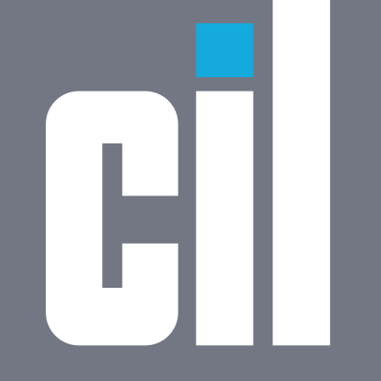

Léo Renard
Développeur full-stack · 6 ans d’expérience · Épinal (Vosges)
Votre navigateur ne permet pas d’afficher le bureau en 3D : voici l’essentiel du portfolio. Voir la version simple du site
Profil
En poste chez Section4, ouvert aux opportunités
Je conçois, développe et maintiens des sites et des applications web sur mesure, de l’intégration d’une maquette Figma jusqu’au back-end et à la base de données.
À propos
Depuis 2020, je développe en agence des projets très variés : sites vitrines sur mesure, boutiques en ligne et applications métier, souvent reliés à des services tiers par leurs API. Cette diversité m’a appris à choisir l’outil adapté à chaque besoin, de WordPress à Symfony ou Node.js.
Mon parcours en graphisme me permet d’échanger facilement avec les designers et de reproduire fidèlement une maquette Figma, jusque dans les détails.
Types de projets
- Sites vitrines sur mesure
- E-commerce
- Applications métier
- Intégration d’API tierces
Compétences
Back-end
- PHP orienté objet
- Symfony
- Twig
- Node.js
- Utilisation d’API REST
- MySQL / MariaDB
Front-end
- HTML sémantique
- SCSS
- JavaScript
- React
- Next.js
CMS
- WordPress
Méthodes et outils
- Git
- Accessibilité RGAA
- Figma
Design
- Photoshop
- Illustrator
- Adobe XD
Au-delà du code
Esprit d’équipe
Je partage volontiers mes connaissances et je donne un coup de main à mes collègues, nouveaux arrivants compris.
Choix techniques
J’ai contribué aux choix techniques de deux projets clients, en les soumettant à la validation de l’équipe.
Relation client
J’échange directement avec les clients pendant le développement de leur projet et lors du suivi de maintenance.
Organisation
Je priorise mes tâches selon les délais et les contraintes techniques de chaque projet.
Accessibilité
Je m’appuie sur le RGAA pour rendre mes intégrations plus accessibles, un sujet que j’approfondis projet après projet.
Parcours
Expériences
-
Section4
- Développeur web full-stackCDI – aujourd’hui · 5 ans 2 mois
- Développeur webCDD – · 1 an
- Développement de sites vitrines sur mesure, de boutiques en ligne et d’applications métier (Symfony, Node.js, PHP, WordPress).
- Intégration d’API et de services tiers.
- Suivi des clients pendant le développement et la maintenance.
- Participation aux choix techniques de deux projets clients.
-
Interaview Production
- Développeur front-endStage – · 4 mois
- Développement d’un site web.
- Maintenance de sites et ajout de fonctionnalités.
-

Constructeur Industriel Lambert
- Technicien informatiqueStage – · 6 semaines
- Mise en place d’un ERP.
- Maintenance informatique.
Formations
- 2020Licence Conception, Rédaction et Réalisation WebEiSINe, Charleville-Mézières
- 2019BTS Systèmes Numériques, option Informatique et RéseauxLycée Raymond Poincaré, Bar-le-Duc
- 2017Baccalauréat scientifiqueLycée Alfred Kastler, Stenay
Projets
ReVoiceChat
Système solaire interactif
Contact
Un poste, un projet ou une simple question ? Écrivez-moi, je vous réponds rapidement.
Télécharger mon CV